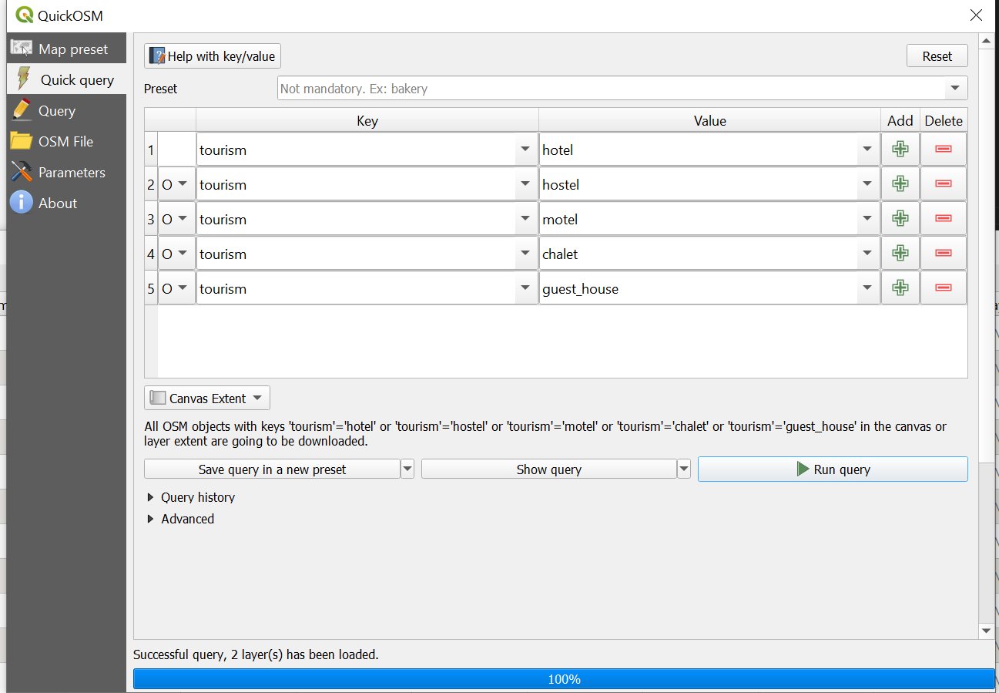

Exercise: OpenStreetMap data export#
Aim of the exercise:
This exercise aims to show two ways how to get OpenStreetMap(OSM) as a vector file into QGIS. We will go through the workflow using Geofabrik, the HOT (Humanitarian OpenStreetMap Team) export tool and the QuickOSM QGIS-plugin.
Type of trainings exercise:
This exercise can be used in online and presence training.
These skills are relevant for
QGIS Essentials
Finding and downloading relevant datasets and preparing them for further analysis
Estimated time demand for the exercise
The exercise takes around 2 hours to complete, depending on the number of participants and their familiarity with computer systems.
Relevant wiki articles
Instructions for the trainers#
Trainers Corner
Prepare the training
Take the time to familiarise yourself with the exercise and the provided material.
Prepare a white-board. It can be either a physical whiteboard, a flip-chart, or a digital whiteboard (e.g. Miro board) where the participants can add their findings and questions.
Before starting the exercise, make sure everybody has installed QGIS and has downloaded and unzipped the data folder.
Check out How to do trainings? for some general tips on training conduction
Conduct the training
Introduction:
Introduce the idea and aim of the exercise.
Provide the download link and make sure everybody has unzipped the folder before beginning the tasks.
Follow-along:
Show and explain each step yourself at least twice and slow enough so everybody can see what you are doing, and follow along in their own QGIS-project.
Make sure that everybody is following along and doing the steps themselves by periodically asking if anybody needs help or if everybody is still following.
Be open and patient to every question or problem that might come up. Your participants are essentially multitasking by paying attention to your instructions and orienting themselves in their own QGIS-project.
Wrap up:
Leave time for any issues or questions concerning the tasks at the end of the exercise.
Leave some time for open questions.
Available Data#
Since the exercise is about finding data, there won’t be any data to download. Instead download the standard folder structure here and insert your data as you download it.
Tasks#
There are multiple ways how to get data from OpenStreetMap (OSM). In this exercise, we will go over a few methods to extract data from OSM. Depending on your use-case, you might only want very specific data from OSM, whereas in others, you might want to download almost all the regional OSM data.
Task 1: Geofabrik#
The Geofabrik website offers downloads of OSM data by region.
Go to https://download.geofabrik.de/ and navigate to the Mauritius
dataset by clicking onAfrica->MauritiusUnder Commonly Used Formats select the option
mauritius-latest-free.shp.zipand download the file. Place it somewhere on your computer where you can find it again and unzip it.Check out the content of the folder. There are many different shapefiles, each containing one kind of OSM data. The whole list of layers and what they include can be found here.
Open a new QGIS project and save it in the
projectfolder of your exercise folder.Load the file
gis_osm_places_a_free_1.shp. This polygon layer contains the boundaries of different features. Take some time to explore the data by using the attribute table.(Optional) You can select all features within the layer with the “fclass” = “island” and export them as a new layer. This will allow you to start creating a map of the islands of Mauritius.
Load the file
gis_osm_buildings_a_free_1.shp. This polygon layer contains all buildings in Mauritius mapped on OSM. Take some time to explore the layer.Add a satellite base map by using the QuickMapServices plugin to check if there are unmapped buildings.
Load the file
gis_osm_landuse_a_free_1.shp. Check out the dataset and use the classification function to get a better overview.Right-click on the layer
gis_osm_landuse_a_free_1in theLayer Panel->Properties. A new window will open up with a vertical tab section on the left. Navigate to theSymbologytab.On the top you find a dropdown menu. Open it and choose
Categorized. UnderValueselect “fclass” (short for featureclass).Further down the window click on
Classify. You will see all unique values of the “fclass” column. You can adjust the colours by double-clicking on one row in the central field. Once you are done, clickApplyandOKto close the symbology window.
As you can see, Geofabrik is great if you want to get complete OSM datasets for whole countries or regions.
Advantages |
Disadvantages |
|---|---|
+ Quick access to complete OSM datasets |
- If one is only interested in specific features or regions (other then countries), not optimal |
+ Very up-to-date OSM exports |
- Large file size |
+ Clear documentation of which OSM features are contained in each shapefile |
- Only available as shapefile |
Task 2: HOT Export Tool#
The HOT Export Tool is a tool for accessing OSM data offered by Humanitarian OpenStreetMap Team (HOT). HOT offers a browser-based tool to download OSM data with good options to specify region, time, feature type and data format.
Go to the HOT Export tool. To use the tool you need an OSM account. If you don’t have one you need to create one. Click on
Log in. In the new window select the option to create a new account.If you have an OSM account you can log in directly into the HOT Export tool by clicking on
Log in.In this example, we want to download all banking and finance features from OSM in Mauritius.
Select area or location: Zoom to Mauritius on the map or use the search bar. To mark the main island there are three options. You can draw a box, draw a polygon or upload a GeoJSON file with your boundaries. In this case, use one of the first two options to mark Mauritius.
Name and description: give your export the name “Mauritius financial institutions” and add a short description of your export.
Format tab: The HOT Export tool offers many data formats in which you can export data. Select GeoPackage (
.gpkg) and leave the other options unchecked.Data tab: The easiest way to select the data you want to download is the Tag Tree. Since we want to download financial institutions, find the “Financial” category and select all options (ATM, Bank, Bureau de Change).
Summary tab: Click on
Create Export. You will be forwarded to a page to wait until the export is finished. When the processing is finished, the page will show a download link for your file.

Hot Export tool download of Mauritius financial institutions. Adapted screenshot from HOT Export Tool#
Load the new file in QGIS.
Arrange the layers on the map so you can see the new layer.
(optional) Use the classification function to get a better overview to get a better overview:
Right-click on the layer
Mauritius_finical_institutionin theLayer Panel->Properties. A new window will open up with a vertical tab section on the left. Navigate to theSymbologytab.On the top you find a dropdown menu. Open it and choose
Categorized. UnderValueselect “amenity”.Further down the window click on
Classify. Now you should see all unique values or attributes of the selected “fclass” column. You can adjust the colours by double-clicking on one row in the central field. Once you are done, clickApplyandOKto close the symbology window.
As you can see, the HOT Export tool offers a good mix of flexibility and quick access to OSM data. However, there are quite some steps involved until the data is in QGIS.
Advantages |
Disadvantages |
|---|---|
+ Good options for data selection |
- Many steps involved |
+ Many different data formats available |
- Only fixed option for data selection |
+ Easy to use |
|
+ Query can easily be repeated |
Task 3: QuickOSM#
The QuickOSM plugin allows you to load OSM data directly into QGIS. However, the plugin requires the deepest knowledge of the OSM data model, compared to the previous two options. To tailor your query based on the exact key and value you need there are two great resources:
OSM Wiki, and especially the Map features article.
Have a look at both.
Install the QuickOSM plugin by clicking on the
Plugintab, ->Manage and Install Plugins…->All-> Search for “QuickOSM” ->Install PluginNow we want to find all health facilities on the island of Mauritius.
Position the island of Mauritius in a way that the island is completely visible in your map canvas.
Open the QuickOSM plugin by clicking on the
Vectormenu ->QuickOSM->QuickOSMClick on
Quick query.In the table, add “amenity” as the key and “hospital” as the value. This query will return hospital data.
Click on the green plus icon to add another line to the table. In this line select “OR” in the small dropdown menu on the left-hand side of the new line
Add “healthcare” as a new key with “hospital” as the value.
Below the table set the small dropdown menu to “Canvas Extent”
Click on
Run query

QuickOSM hospital query#
Check out the new layers in the layer panel. Open the attribute table of the point layer. Check the “healthcare” and “amenity” columns. Which data would be missing if you would have used only one of the keys?
Do the same query for La Reunion which is to the southwest of Mauritius. Move the island in the middle of your map canvas and click
Run query. Does the attribute table of this new point layer look different?What if we only want hospitals with an emergency room? In this case, we would need to build a query using a combination of the operators “OR” and “AND”. Look at the image below.

QuickOSM hospital with emergency capacity query#
Now try to create a query that shows all accommodations like hotels on the island. To do that, use this wiki page. The solution can be found in the dropdown menu below.
Solution accommodation query
{kind=link}

QuickOSM accommodation query#
Advantages |
Disadvantages |
|---|---|
+ Query can be tailored for very specific data |
- Requires knowledge of OSM data model |
+ Data loads directly in QGIS |
- Building queries can quickly become complex |
+ Query can easily be repeated |